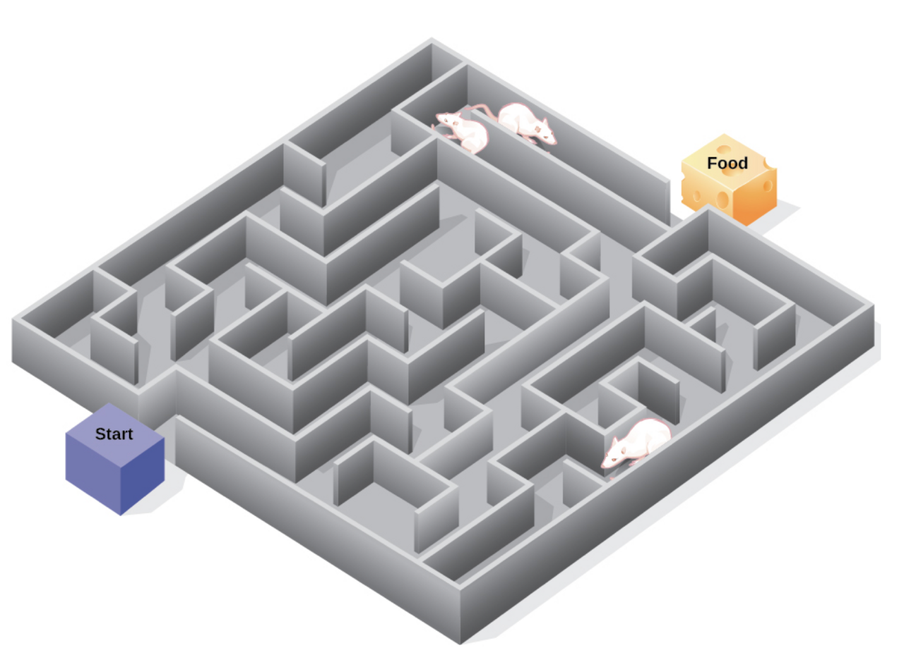
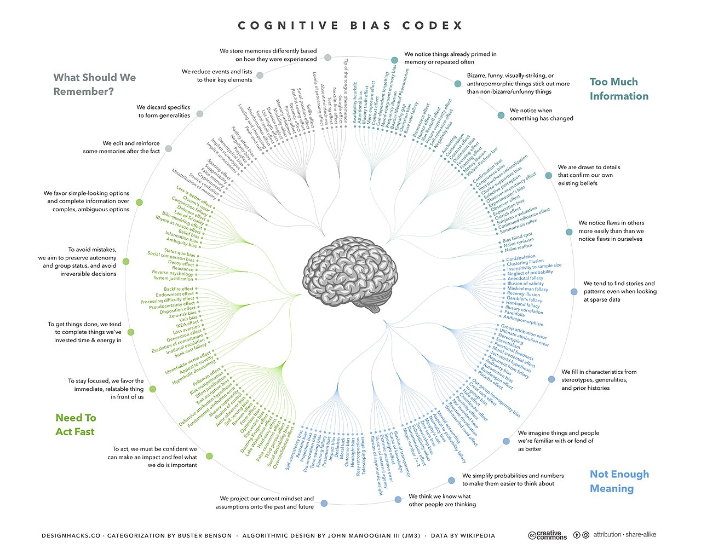
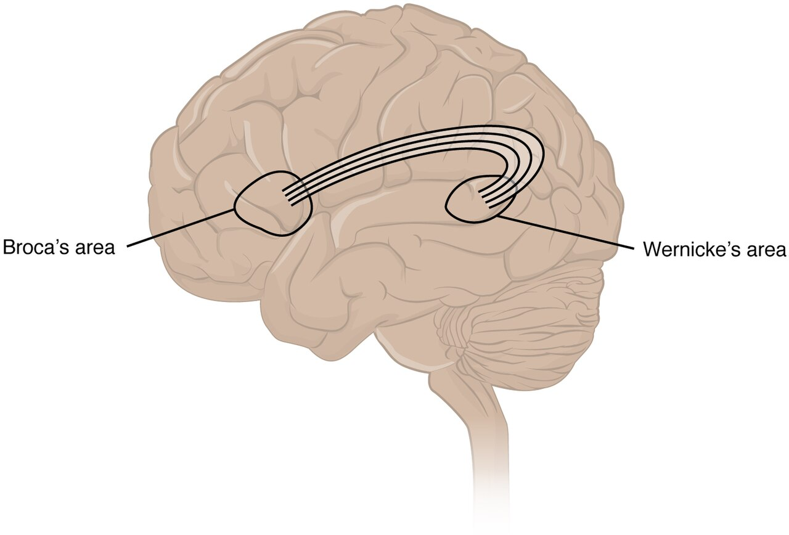
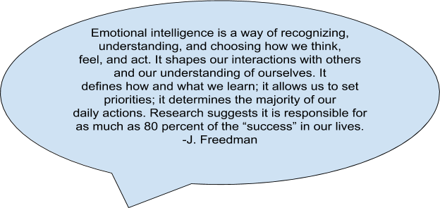
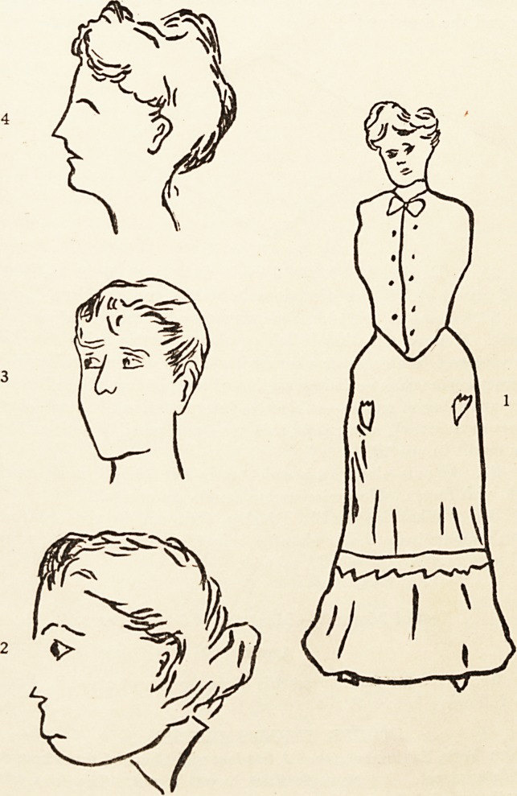

Thinking, Language & Intelligence
Every waking moment, your mind is sorting the world into categories, chasing solutions, wrapping ideas in words, and sizing up how clever the person across from you seems. This chapter opens the machinery of higher thought: how we build the concepts that let us think at all, the shortcuts and traps that shape our judgments, the astonishing system of language that a toddler masters without a single lesson, and the century-long effort to define and measure intelligence. Along the way you will meet the researchers — Rosch, Tversky and Kahneman, Chomsky, Spearman, Gardner, Binet, Wechsler — who turned these everyday marvels into testable science. The goal is not to memorize a bestiary of biases and theories, but to see how thinking actually works, where it reliably breaks, and why measuring a mind is far harder than it looks.
By the end of this chapter you can
- Define a concept and explain how prototypes and schemas organize knowledge.
- Distinguish algorithms from heuristics and identify obstacles to problem solving such as mental set and functional fixedness.
- Explain the availability and representativeness heuristics, confirmation bias, and the framing effect, with real examples.
- Describe the building blocks of language — phonemes, morphemes, grammar — and the milestones of language development.
- Contrast Skinner's and Chomsky's accounts of how children acquire language.
- Compare theories of intelligence: Spearman's g, Gardner's multiple intelligences, Sternberg's triarchic theory, and emotional intelligence.
- Explain how IQ is defined and why a good test must be both reliable and valid.
- Summarize what twin and adoption studies reveal about the nature–nurture roots of intelligence.
Section 1Concepts & Problem Solving

Concepts: the mind's filing system
Thinking would be impossible if every object, event, and idea had to be handled as a brand-new item. Instead the mind groups things into concepts — mental categories of objects, events, or ideas that share common features. The concept dog lets you recognize a Chihuahua and a Great Dane as the same kind of thing, predict that both will bark and need feeding, and do all of this without conscious effort. Concepts come in two rough flavors. Natural concepts are built from everyday experience and have fuzzy, imprecise boundaries (think of fruit or game). Artificial (formal) concepts are defined by a fixed set of features — a triangle is any closed figure with three straight sides, no exceptions.
We rarely store a concept as a checklist of rules. According to Eleanor Rosch's prototype theory, each category is anchored by a prototype — the best, most typical example. For most North Americans a robin is a highly prototypical bird, while a penguin or ostrich sits at the category's edge. The closer an item is to the prototype, the faster we recognize it as a member. Concepts also link together into schemas, larger frameworks that organize information and expectations. A role schema tells you how a librarian is likely to behave; an event schema (or script) tells you the expected sequence at a restaurant — be seated, order, eat, pay. Schemas make life efficient, but they also seed the stereotypes and expectations that later sections show can mislead us.
Solving problems: algorithms and heuristics
A problem exists whenever there is a gap between where you are and where you want to be. Psychologists divide the routes across that gap into two broad strategies. An algorithm is a step-by-step procedure that, followed correctly, is guaranteed to produce the right answer — a long-division rule, a recipe, or trying every possible combination on a lock. Algorithms are reliable but often slow, and for large problems they can be hopelessly impractical. A heuristic is a mental shortcut or rule of thumb that usually gets you there faster, without any guarantee. "Start with the corners and edges" is a heuristic for a jigsaw puzzle; working backward from the goal and means–ends analysis (repeatedly reducing the distance to the goal) are heuristics that solve many everyday problems. The tradeoff is exact: algorithms buy certainty with effort, heuristics buy speed with the risk of error.
| Strategy | What it is | Guaranteed? | Everyday example |
|---|---|---|---|
| Algorithm | Exhaustive, step-by-step rule | Yes, if followed correctly | Trying every 4-digit PIN in order |
| Heuristic | Shortcut / rule of thumb | No — usually works | Guess the PIN is a birth year |
| Trial and error | Try options until one works | No | Jiggling keys to find the right one |
| Insight | Sudden reorganization (the "aha!") | No | Suddenly seeing how a riddle fits |
Good solutions are also blocked by predictable obstacles. A mental set is the tendency to attack a new problem with a strategy that worked in the past, even when a simpler route exists. Functional fixedness is a special case: seeing an object only in its usual role — failing to notice that a coin can be a screwdriver or a book can prop open a window. Recognizing these traps is the first step to escaping them, which is exactly what the next section is about.
- A concept is a mental category; prototypes are its most typical members, and schemas link concepts into expectations.
- Algorithms guarantee a correct answer but are slow; heuristics are fast shortcuts with no guarantee.
- Mental set and functional fixedness are habits of thought that block fresh solutions.
- The efficiency of heuristics is real — but it is exactly what produces systematic errors.
Section 2Judgment & Bias

Two heuristics that bend our judgment
Beginning in the 1970s, Amos Tversky and Daniel Kahneman showed that the shortcuts of the previous section produce not random mistakes but predictable ones. The availability heuristic judges how likely or common something is by how easily examples come to mind. Vivid, recent, or heavily reported events feel more probable than they are: people fear plane crashes more than car crashes, and shark attacks more than the far deadlier backyard swimming pool, because the dramatic cases are so mentally available — even though the mundane risks kill vastly more people. The representativeness heuristic judges how likely something is by how well it matches a prototype. Told that "Steve is shy, tidy, and detail-oriented," most people guess he is more likely a librarian than a farmer — ignoring the base rate that there are far more farmers than librarians. The same heuristic produces the famous conjunction fallacy: people rate "Linda is a bank teller and a feminist" as more probable than "Linda is a bank teller," which is logically impossible, because the fuller description fits their prototype better.
| Bias | The shortcut | Where it goes wrong |
|---|---|---|
| Availability heuristic | Judge frequency by how easily cases come to mind | Overestimating vivid, publicized risks (plane crashes, lottery wins) |
| Representativeness heuristic | Judge probability by resemblance to a prototype | Ignoring base rates; the conjunction fallacy |
| Confirmation bias | Seek and weigh evidence that fits current beliefs | Never testing a belief that could be wrong |
| Framing effect | Let wording (gain vs. loss) drive the choice | Different decisions for identical facts |
Confirmation bias and framing
Confirmation bias is the tendency to search for, favor, and remember information that supports what we already believe, while discounting evidence that contradicts it. In Peter Wason's classic card and number-rule studies, people tested their hunches almost exclusively by looking for confirming cases and rarely tried the disconfirming test that could have exposed a wrong idea. The bias quietly powers everything from stubborn political arguments to a physician anchoring on a first diagnosis. Finally, the framing effect shows that the wording of a choice, not just its content, moves decisions. Tversky and Kahneman's "Asian disease" problem asked people to choose between programs described in terms of lives saved or lives lost; framed as a gain, people played it safe, but framed as a loss, the very same odds pushed them toward risk. A meat labeled "90% lean" outsells the identical meat labeled "10% fat." The facts are constant; only the frame changes — and so does the answer.
- The availability heuristic mistakes ease of recall for true frequency; the representativeness heuristic mistakes resemblance for probability and ignores base rates.
- Confirmation bias is seeking evidence that fits existing beliefs and avoiding tests that could disprove them.
- The framing effect means the same facts, worded as a gain or a loss, yield different decisions.
- These errors are systematic and predictable, which is what makes them a science rather than a list of blunders.
Section 3Language

The building blocks of language
Language is a system of arbitrary symbols, combined by rules, that lets us communicate an infinite range of meanings. Its power comes from being built in layers. The smallest units of sound are phonemes — English uses about forty-four, the difference between the b and p that separates bat from pat. Phonemes combine into morphemes, the smallest units that carry meaning: the word cats holds two morphemes, cat (an animal) and -s (more than one). Morphemes build into words, whose meanings are studied as semantics, and words are arranged by the rules of grammar — including syntax, the rules for word order. This layered design gives language its most remarkable property, generativity: from a finite set of sounds and rules we can produce and understand sentences that have never been spoken before, including this one.
| Approx. age | Stage | What it sounds like |
|---|---|---|
| 2–4 months | Cooing | Drawn-out vowel sounds ("ooo," "aaa") |
| ~6 months | Babbling | Consonant–vowel strings ("bababa"), including sounds from all languages |
| ~12 months | One-word (holophrastic) | Single words standing for whole ideas ("milk!") |
| 18–24 months | Telegraphic speech | Two-word essentials, function words dropped ("want cookie") |
| 2–3 years | Rapid grammar growth | Overregularization ("goed," "foots") |
How children acquire language
Children master this system with breathtaking speed — roughly a word every two hours through the toddler years — and in a strikingly universal order (see the table). A telling clue is overregularization: a child who once said "went" starts saying "goed," proving she has extracted the past-tense rule rather than merely imitating what she heard. That fact sits at the heart of a famous debate. The behaviorist B. F. Skinner argued that language is learned like any other behavior, through imitation, reinforcement, and shaping — parents reward correct utterances and correct wrong ones. Noam Chomsky countered that reinforcement cannot explain how quickly and creatively children generate sentences they were never taught, nor errors like "goed" that no adult models. He proposed that humans are born with a language acquisition device, an innate readiness for the universal grammar underlying all languages, waiting only for exposure to switch it on. The modern view blends both: biology supplies the equipment and a sensitive critical period for acquisition, while a rich language environment supplies the input. A related question — whether the language you speak shapes the thoughts you can think, the linguistic relativity (Sapir–Whorf) hypothesis — is now seen as real but modest: language nudges attention and memory rather than imprisoning thought.
- Language is layered: phonemes (sounds) → morphemes (meaning units) → words → grammar/syntax.
- Development follows a universal order: cooing → babbling → one-word → telegraphic speech.
- Skinner emphasized learning and reinforcement; Chomsky proposed an innate language acquisition device and universal grammar.
- Overregularization ("goed") shows children extract rules rather than merely imitate.
Section 4Theories of Intelligence

One intelligence, or many?
Intelligence is, broadly, the ability to learn from experience, solve problems, and adapt to new situations — but psychologists have argued for a century over whether it is one thing or many. Charles Spearman, using the new tool of factor analysis, noticed that people who score well on one kind of mental test tend to score well on others. He concluded there must be a single underlying general intelligence, which he called g, sitting beneath all the specific abilities. Later theorists refined the single factor: Raymond Cattell split it into fluid intelligence (the raw ability to reason and solve novel problems, which peaks young) and crystallized intelligence (accumulated knowledge and skills, which grows with age). L. L. Thurstone resisted the single number entirely, arguing intelligence is a cluster of seven "primary mental abilities" rather than one master factor.
| Theory | Theorist | Core idea |
|---|---|---|
| General intelligence (g) | Spearman | One underlying factor drives all mental abilities |
| Fluid vs. crystallized | Cattell | Reasoning power (fluid) vs. accumulated knowledge (crystallized) |
| Multiple intelligences | Gardner | Eight independent intelligences (linguistic, musical, spatial…) |
| Triarchic theory | Sternberg | Analytical, creative, and practical intelligence |
| Emotional intelligence | Salovey & Mayer | Perceiving, understanding, and managing emotions |
Broadening the definition
The strongest challenge to a single g came from Howard Gardner, whose theory of multiple intelligences proposes at least eight relatively independent kinds — linguistic, logical–mathematical, musical, bodily–kinesthetic, spatial, interpersonal, intrapersonal, and naturalist. Gardner points to savants and to brain injuries that knock out one ability while sparing others as evidence the "intelligences" are genuinely separate. Robert Sternberg's triarchic theory offers a tidier trio: analytical intelligence (the academic problem-solving that tests measure well), creative intelligence (inventing and imagining), and practical intelligence (the "street smarts" of getting things done). A related idea that reached far beyond the lab is emotional intelligence — introduced by Peter Salovey and John Mayer and popularized by Daniel Goleman — the ability to perceive, understand, use, and manage emotions in oneself and others. Emotional intelligence predicts aspects of workplace and relationship success that a standard IQ score misses, though critics warn it is harder to measure objectively and risks becoming a label for every desirable trait.
- Spearman's g holds that a single general factor underlies all mental abilities.
- Cattell distinguished fluid (novel reasoning) from crystallized (accumulated knowledge) intelligence.
- Gardner's multiple intelligences and Sternberg's triarchic theory argue intelligence is plural, not a single number.
- Emotional intelligence (Salovey & Mayer; Goleman) captures skills of perceiving and managing emotions that IQ tests miss.
Section 5Measuring Intelligence

From mental age to IQ
The modern intelligence test was born of a practical request. In 1905 the French government asked Alfred Binet and Théodore Simon to identify schoolchildren who needed extra help. Their scale introduced the idea of mental age — the age level of the problems a child could solve. Lewis Terman of Stanford adapted it into the Stanford–Binet and borrowed a formula for the intelligence quotient (IQ): mental age divided by chronological age, times 100. A child of eight performing like a ten-year-old scored an IQ of 125. Modern tests, chiefly David Wechsler's scales (the WAIS for adults, the WISC for children), abandoned that ratio for a deviation IQ that compares your score to same-age peers on a normal distribution — the bell curve with an average of 100 and about two-thirds of people scoring between 85 and 115. Wechsler's tests also report separate verbal and performance scores, reflecting the multi-part view of ability from the previous section.
What makes a test trustworthy
A number is only as good as the test that produced it, and two properties decide whether an intelligence score means anything. Reliability is consistency — a reliable test gives nearly the same result when you take it twice (test–retest reliability) or when its halves are compared (split-half reliability). Validity is accuracy — whether the test actually measures what it claims. A test has predictive (criterion) validity if scores forecast a relevant outcome such as school grades, and construct validity if it truly taps the trait of intelligence rather than, say, reading speed. Crucially, a test can be reliable without being valid: a bathroom scale that always reads five pounds heavy is perfectly consistent and perfectly wrong. Both properties depend on standardization — administering and scoring the test the same way every time, and interpreting scores against the norms of a large representative sample.
| Property | Question it answers | How it is checked |
|---|---|---|
| Reliability | Is the score consistent? | Test–retest; split-half agreement |
| Validity | Does it measure the right thing? | Predicts outcomes (grades, job success); construct evidence |
| Standardization | Is it given & scored the same way? | Fixed procedures; norms from a representative sample |
Finally, the oldest question: where does intelligence come from? Twin and adoption studies give a clear but easily misread answer. Identical twins raised apart still resemble each other in IQ far more than adopted siblings raised together, yielding heritability estimates for intelligence around 0.5 in adults — meaning roughly half the variation in a population traces to genetic differences. But heritability describes a population, not a person, and it says nothing about groups; environment matters enormously. Enrichment, nutrition, and schooling raise scores, average scores have climbed steadily across the twentieth century (the Flynn effect), and Claude Steele's work on stereotype threat shows that merely reminding people of a negative stereotype can depress their test performance. Intelligence is neither fixed at birth nor infinitely malleable; it emerges from genes and environment in constant conversation.
- Binet & Simon created the first practical test; Terman gave us the Stanford–Binet and the IQ formula; Wechsler introduced deviation IQ and the WAIS/WISC.
- IQ scores fall on a normal distribution centered at 100.
- A good test must be both reliable (consistent) and valid (measures what it claims); the two are independent.
- Twin studies put the heritability of intelligence near 0.5, but environment, the Flynn effect, and stereotype threat show nurture matters greatly.
The chapter in one breath
- Concepts are the mind's categories; prototypes are their best examples and schemas organize expectations.
- Algorithms guarantee correct answers slowly; heuristics are fast shortcuts that also cause predictable errors, and mental set and functional fixedness block fresh solutions.
- The availability and representativeness heuristics, confirmation bias, and the framing effect — mapped by Tversky and Kahneman — bend judgment in systematic ways.
- Language is layered from phonemes to morphemes to grammar, and children acquire it in a universal order that fueled the Skinner–Chomsky debate.
- Theories of intelligence range from Spearman's g to Gardner's multiple intelligences, Sternberg's triarchic theory, and emotional intelligence.
- IQ testing runs from Binet to Terman to Wechsler; scores fall on a normal distribution and are only meaningful if a test is both reliable and valid.
- Twin studies place the heritability of intelligence near 0.5, but the Flynn effect and stereotype threat prove environment is powerful too.
ReferenceWords worth knowing
A quick reference for the terms in this chapter — skim it now, or circle back whenever a word trips you up.
- Algorithm
- A step-by-step procedure that, correctly followed, guarantees a solution to a problem.
- Availability heuristic
- Judging how likely or common something is by how easily examples come to mind.
- Concept
- A mental category of objects, events, or ideas that share common features.
- Confirmation bias
- The tendency to seek, favor, and remember information that supports one's existing beliefs.
- Crystallized intelligence
- Accumulated knowledge and verbal skills, which tend to grow with age (Cattell).
- Emotional intelligence
- The ability to perceive, understand, use, and manage emotions in oneself and others.
- Fluid intelligence
- The capacity to reason and solve novel problems, largely independent of prior knowledge (Cattell).
- Framing effect
- The finding that the way a choice is worded (as a gain or a loss) changes the decision.
- Functional fixedness
- The inability to see an object as useful for anything other than its usual function.
- General intelligence (g)
- Spearman's proposed single factor underlying all specific mental abilities.
- Heuristic
- A mental shortcut or rule of thumb that speeds problem solving without guaranteeing a correct answer.
- Intelligence quotient (IQ)
- A score expressing a person's performance relative to age peers; originally mental age divided by chronological age, times 100.
- Language acquisition device
- Chomsky's proposed innate mental structure that prepares humans to learn grammar from exposure.
- Mental set
- The tendency to approach a new problem using a strategy that worked in the past.
- Morpheme
- The smallest unit of language that carries meaning, such as a root word or the plural "-s".
- Phoneme
- The smallest distinct unit of sound in a language.
- Prototype
- The best or most typical example of a concept, against which new items are compared.
- Reliability
- The consistency of a test — the degree to which it yields the same result on repeated measurement.
- Representativeness heuristic
- Judging the probability of something by how closely it matches a prototype, often ignoring base rates.
- Standardization
- Administering and scoring a test uniformly and interpreting scores against norms from a representative sample.
- Telegraphic speech
- The early two-word stage in which children convey meaning while dropping function words ("want cookie").
- Validity
- The degree to which a test measures what it claims to measure.